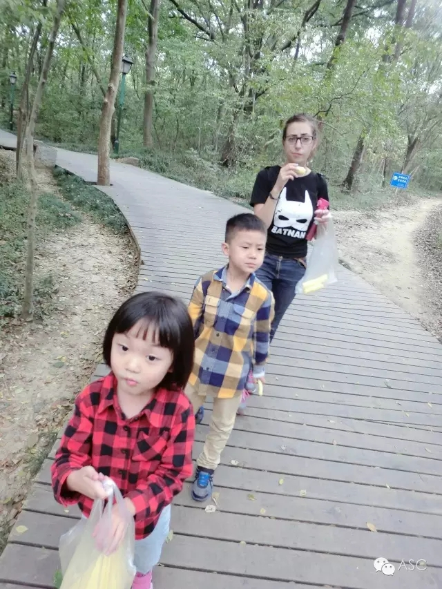
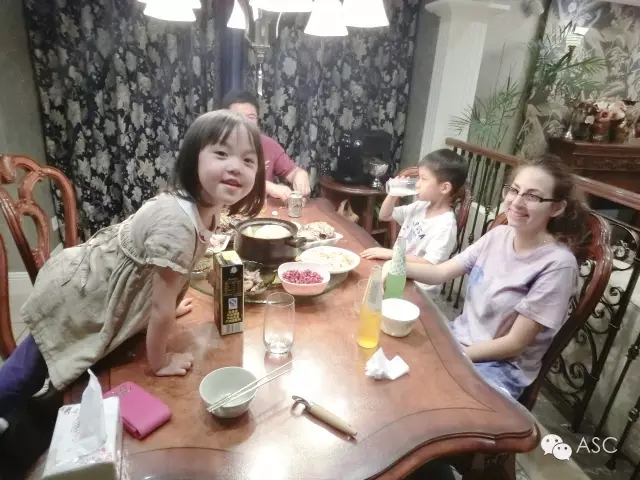
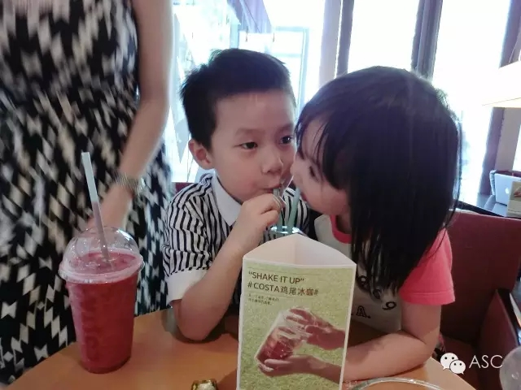
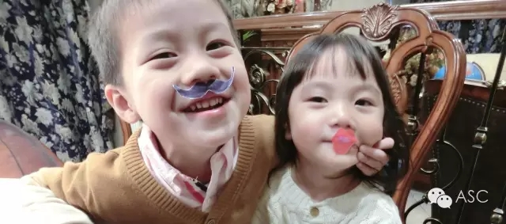
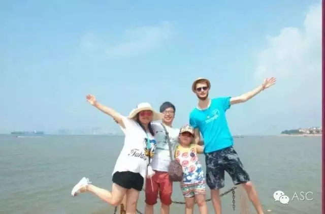
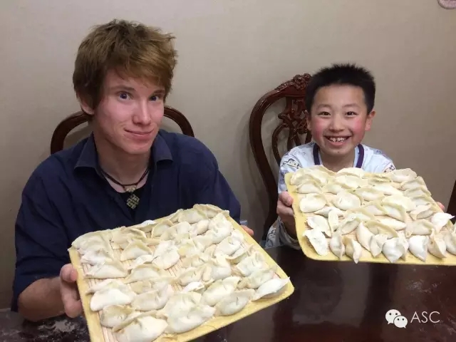
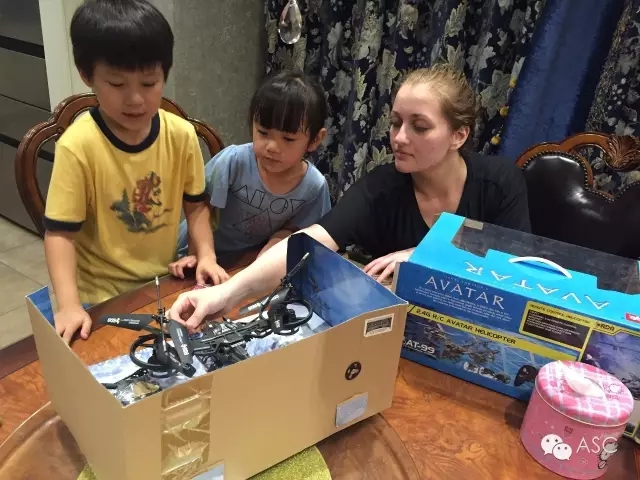
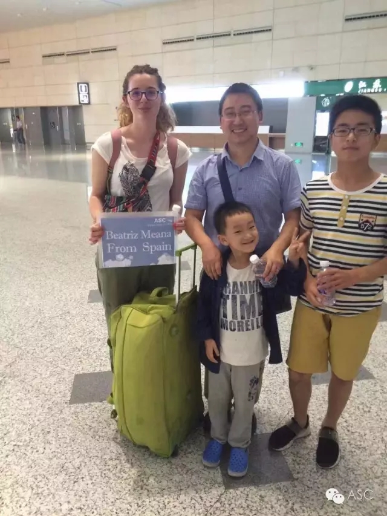
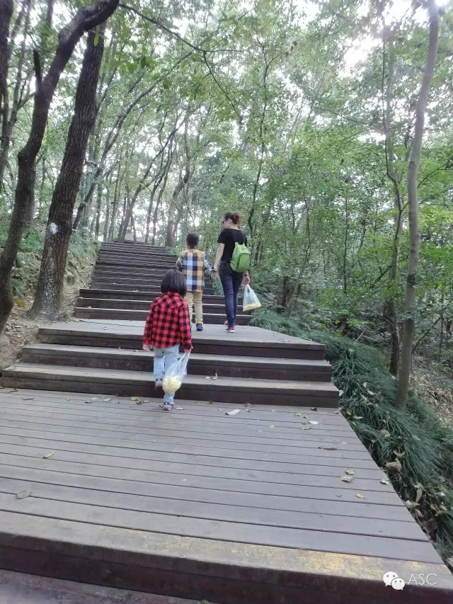

互惠动态
|
|
你的儿女其实不是你的
诗人纪伯伦曾写过一首诗——《Kahlil Gibran: On Children》，关于孩子，关于他们的到来，关于他们的未来，关于他们爱你们，也爱自己，不同的人可能会有不同的感觉，他/她也许是你的全部，但是你不应该是他/她的全部。随着儿女慢慢长成，他们开始有自己的思想，他们会反叛，会辩驳，会思考，会争执，开始与我们格格不入，离我们越来越远，致我们终将远离的儿女。

Your children are not your children.
你的儿女，其实不是你的儿女。
They are the sons and daughters of Life's longing for itself.
他们是生命对于自身渴望而诞生的孩子。

They come through you but not from you,
他们借助你来到这个世界，却非因你而来，
And though they are with you, yet they belong not to you.
他们在你身旁，却并不属于你。

You may give them your love but not your thoughts,
你可以给予他们的是你的爱，却不是你的想法，
For they have their own thoughts.
因为他们有自己的思想。

You may house their bodies but not their souls,
你可以庇护的是他们的身体，却不是他们的灵魂，
For their souls dwell in the house of tomorrow, which you cannot visit, not even in your dreams.
因为他们的灵魂属于明天，属于你做梦也无法达到的明天。

You may strive to be like them, but seek not to make them like you，
你可以拼尽全力，变得像他们一样，却不要让他们变得和你一样，
For life goes not backward nor tarries with yesterday.
因为生命不会后退，也不在过去停留。

You are the bows from which your children as living arrows are sent forth.
你是弓，儿女是从你那里射出的箭。
The archer sees the mark upon the path of the infinite,
弓箭手望着未来之路上的箭靶，
and He bends you with His might that His arrows may go swift and far.
他用尽力气将你拉开，使他的箭射得又快又远。

Let your bending in the archer's hand be for gladness，
怀着快乐的心情，在弓箭手的手中弯曲吧，
For even as he loves the arrow that flies, so He loves also the bow that is stable.
因为他爱一路飞翔的箭，也爱无比稳定的弓。



关于互惠，您了解得够多么？
请外国学生来家庭照顾孩子，辅导孩子外语？
只了解这些是不够的！
获取更多信息请参考以下方式：
联系ASC：
电话：86-21-61116069(上海中心）
86-25-66065662（南京中心）
全国家庭均可申请！
手机：15601666586（可加微信）
Q Q：3259637585
微信：asc-center
邮箱：info@asc-center.com
网站：www.asc-aupair.com

感谢您对我们的关注